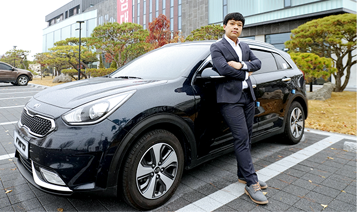

출산을 앞둔 아내를 위해
수많은 차들을 꼼꼼히 비교했지요.
이게..시동이 켜졌나..안 켜졌나 하는 거 말이에요. 두근대는 마음으로 시동 버튼을 눌렀는데 미동도 없는 니로!! 순간, ‘차가 잘못 되었나?’ 하는 생각에 등에선 식은땀이 흐르고.. 아내도 시동 걸렸냐고 보채는데, 밖에 나가 엔진을 살펴보니 ‘어서 와, 하이브리드는 처음이지?’ 하며 살짝 무시하는 듯한 반응에 적잖은 충격… 아기가 태어나고 처음 산후조리원에서 나오는 날, 아내와 아이가 함께 뒷좌석에 탔죠.
신생아라 걱정했었는데 집에 도착하는 순간까지 한번의 울음 없이 계속 자는 걸 보고 이래서 가장이 되면 스피드보다 정숙성과 승차감을 먼저 따지는구나 싶더라구요.
첫차 스파크를 3년 가까이 애지중지하며 탔던 저희 부부, 그 당시 차에 대한 불만이 크게 없었지만 와이프의 출퇴근거리가 멀고 출산을 앞두고 있어 가격 부담이 없으면서 조금 더 안전하고 연비가 좋은 차로 바꿔야겠다는 생각을 가지게 되었습니다. 국내에 판매하는 수많은 차들을 하나하나 비교한 끝에 아반떼AD로 80% 마음이 기울었을 때, 마침 기아자동차에서 하이브리드 소형 SUV 니로를 곧 출시한다는 소식을 들었죠. 곧바로 네이버 카페 니로 클럽에 가입해 정보를 수집했고, 이미 출시된 아이오닉과 같은 하이브리드 시스템이지만 요새 인기가 좋은 소형 SUV 컨셉으로 나온 니로에 대해 자세히 알게 됐죠.
니로는 소형 SUV 중 동급에서 제일 넓은 실내와 공인연비 19.5km/l라는 연비를 갖고 있었습니다. 여기에 매료되어 약간은 생소한 하이브리드 SUV 니로를 사전예약 구매하기로 결정했답니다.
들뜬 마음에 너무 빨리 사전예약을 한 탓인지 한 달 이상을 기다려야 했고 기다림에 지쳐갈 즈음 드디어 니로를 만났죠. 니로와 처음 대면식을 했을 때, 생각만 해도 민망했던 에피소드가 하나 있습니다. 아마 니로를 처음 접한 분들은 한번씩 경험하지 않았을까 싶네요,
그런 쇼킹한 느낌을 받은 니로를 7개월 가량 운전해보고 느낀 장점은 19.5Km/L의 높은 공인연비를 자랑하지만 실제 연비는 훨씬 더 나온다는 점입니다. 주로 꼬불꼬불한 언덕이 있는 강원도 춘천에서 화천을 주행하는 저희 부부는 신경 써서 연비운전을 하지 않아도 기본적으로 23~26Km/L 연비가 나와 운전을 하면 할수록 돈을 번다는 생각이 듭니다. 특히 정품 내비게이션을 장착하면 LCD를 통해 평균연비와 전기모터 사용량, 에너지 흐름도를 볼 수 있어 운전중 에너지 절약을 얼마나 하는지 한눈에 알아볼 수 있지요.
하이브리드 SUV 니로는 ‘연비만 좋다’ 는 인식이 강한 게 사실. 하지만 실내를 살펴보면 기본 트림인 럭셔리 사양임에도 블루투스와 듀얼 풀 오토 에어컨이 장착되어 있어 더운 여름날이나 추운 겨울에도 오토 버튼 한번만 누르면 알아서 온도를 맞춰주기에 다른 추가적인 조작을 할 필요가 없어 운전에만 집중할 수 있었습니다. 1인 운전시 DRIVER ONLY 버튼을 눌러 운전자석에만 알뜰하게 냉난방을 할 수 있는 스마트한 부분도 마음에 쏙 듭니다.
소형 SUV 차급을 뛰어넘는
쾌적한 공간성입니다.
연비와 함께 출시 전부터 니로가 크게 홍보한 부분이 있지요. 바로 동급 소형 SUV 중에서 제일 넓은 실내를 갖추고 있다는 것입니다. 실내공간을 좌우하는 휠베이스는 한 체급 위로 볼 수 있는 준중형 SUV보다도 크더군요. 아이를 위한 차량으로 선택한 만큼 그 기대감 또한 컸습니다. 사전예약을 했던 만큼 자동차가 나올 때까지 실물을 볼 수가 없어 타사의 동급 차량을 시승하며 ‘소형 SUV는 대략 이런 느낌이구나’하는 생각을 했지만 출고된 니로를 직접 느껴보니 놀라울 정도로 넓은 실내에 감탄을 금치 못했습니다. 특히 뒷좌석은 부피가 큰 유아용 카시트를 장착하기에도 어려움이 없고 90kg의 몸무게를 가진 제가 뒷좌석에 앉아도 주먹 2~3개는 충분히 들어갈 정도로 편안함을 자랑했습니다.
니로의 트렁크 용량 역시 427리터로 소형 SUV 중 가장 넓은 적재공간을 지녀 많은 짐을 적재해야 하는 패밀리카의 용도로도 적합해 보였습니다.
저희 가족 역시 갓 태어난 아들 덕분에 짧은 거리를 움직이려 해도 짐이 꽤 많은 편이지만 넉넉한 트렁크를 볼 때마다 만족을 느낄 수 있었습니다. 아파트 분양모형 일을 하는 저는 납품하는 날에는 많은 짐을 운반해야 합니다. 그날은 모형을 납품하는 날이었는데, 회사 사장님께서 니로를 보시고는 '소형 SUV라서 뭐 짐이 얼마나 들어가겠어?' 라며 미심쩍어하셨습니다. 다른 차량를 타고 가자고 하셨지만 니로의 2열을 접고서 짐을 빠짐없이 적재하고도 남는 것을 본 뒤 ‘작은 차가 많이도 들어가네?’ 하시며 의심을 거두셨죠. 그때, 니로를 정말 잘 선택했구나 싶더라구요.
많은 분들이 ‘국산 하이브리드 자동차는 아직 멀었다’ 는 말을 자주 하는데 소형 SUV라고 믿을 수 없는 넓은 실내와 대충 운행해도 25km/l의 높은 연비가 나오는 니로를 몰면서 이제 당당하게 말할 수 있게 됐답니다. “국산 하이브리드 자동차가 이 정도로 발전했다!!”고요. 처음 니로를 구매하고 몇 달간 제가 사는 춘천에서는 다른 니로를 볼 수가 없었는데 이제는 심심치 않게 도로에서 마주치곤 한답니다. 많은 오너들이 저와 같은 만족감을 느끼지 않을까 생각하며
오늘도 안전하게 운행의 동반자가 되어줄 니로의 시동버튼을 누르고 있습니다. 여러분도 저와 같은 만족감을 느끼고 싶다면 스마트한 자동차 니로를 선택하세요.